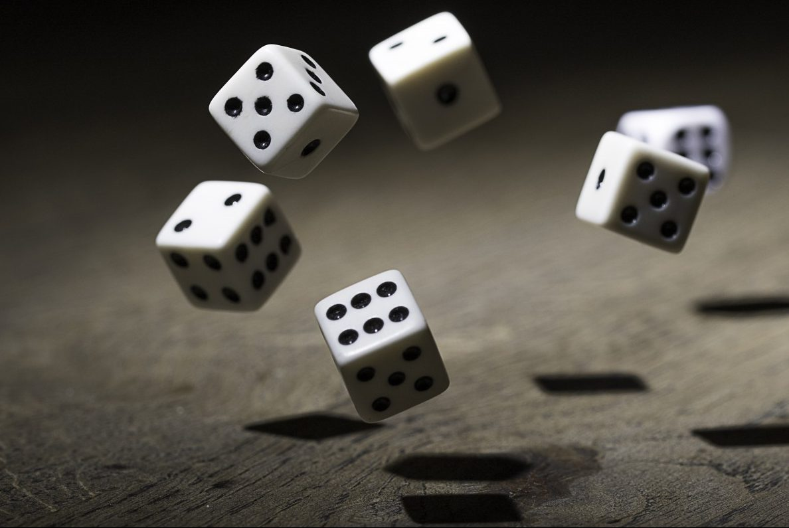
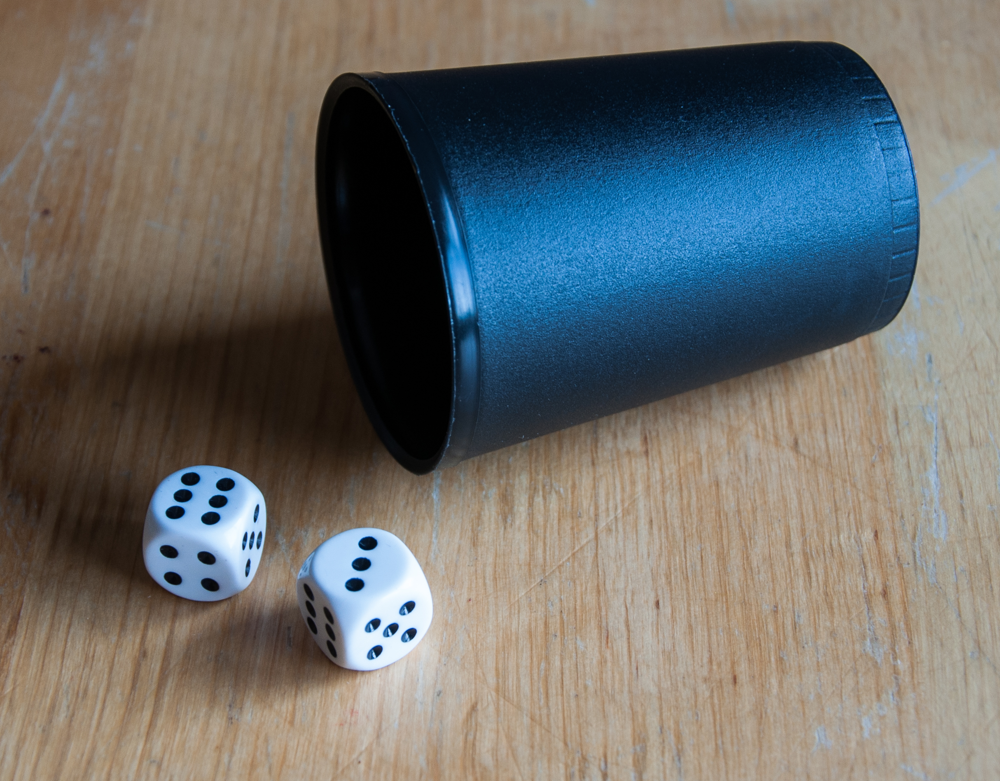

CHO HAN
Chō-Han (丁半) is a traditional Japanese gambling game using dice.
The game uses two standard six-sided dice, which are shaken in a bamboo cup or bowl by a dealer. The cup is then overturned onto the floor. Players then place their wagers on whether the sum total of numbers showing on the two dice will be "Chō" (even) or "Han" (odd). The dealer then removes the cup, displaying the dice. The winners collect their money.
In this project I created a function that stimulates rolling two different dices and adding the results together. The game has two parameters that allows the player to give their predictions and place their bets.The conditional statements are then gone trough and a statement is printed to let you know whether you've won or lost and how much money you gained or lost.